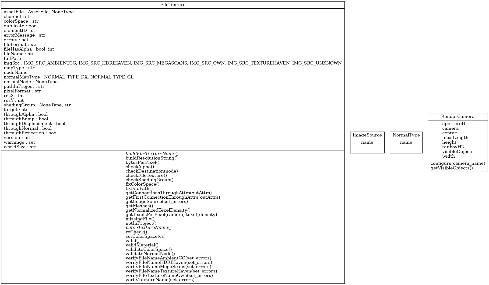

tlc.shading.textureanalyzer.FileTexture
{kind=link}
- class tlc.shading.textureanalyzer.FileTexture(node)
Bases:
objectFile texture class
- __init__(node)
Constructor
- Parameters:
node (str) – Texture file node name
Methods
__init__(node)Constructor
buildFileTextureName()buildResolutionString()bytesPerPixel()checkAlpha()checkDestination(node)Check the destination of the texture and return the map type This method sets the self.target attribute
Check file texture (fullPath).
Find the shading group/engine for material where the texture is used
fixColorSpace()Try to fix file path, working on the hypothesis that it is correct relative to the sourceimages folder, only failing the absolute path before this folder
getConnectionsThroughAttrs(outAttrs)Get the list of connections for the first attribute in the list that has a connection
getFirstConnectionThroughAttrs(outAttrs)Get the first connection for any of the output attributes
getImageSource([set_errors])Get meshes connected to the shading engine
getNormalizedTexelDensity()Check whether file is not found or not readable
Check whether file path exists, but is not in project
parseTextureName()reCheck()Recheck file texture node
setColorSpace(cs)valid()Texture is valid (has passed basic checks)
validMaterial()validateColorSpace()validateNormalNode()verifyFileNameAmbientCG([set_errors])verifyFileNameHDRIHaven([set_errors])verifyFileNameMegaScans([set_errors])verifyFileNameTextureHaven([set_errors])verifyFileTextureNameOwn([set_errors])Verify texture name matches texture configuration and format defined in the pipeline
verifyTextureName([set_errors])Attributes
Error messages (one line per detected error)
File texture path in project (excluding file name)
Texture file name (including extension)
Width in pixels
Height in pixels
Color space
Channel the texture is connected to
Map type (following pipeline definition)
Node the texture is connected to (excluding projections and other modifiers)
Shading group at the end of the shading network of the texture
Megascans, HDRIHaven, ...)
Texture node name
Full path of the file texture (including file name)
Errors detected (colorSpace, fileFormat, ...)
Warnings detected (imgSrc, ...)
AssetFile object.
- assetFile
AssetFile object. Asset file where texture is located
- channel
Channel the texture is connected to
- checkDestination(node)
Check the destination of the texture and return the map type This method sets the self.target attribute
- Parameters:
node (str) – Texture file node name
- Returns:
Map type
- Return type:
str
- checkFileTexture()
Check file texture (fullPath). Verify the following conditions: The file exists and is readable The file is inside sourceimages folder in current project This method sets fields pathInProject, fileName, fileFormat
- checkShadingGroup()
Find the shading group/engine for material where the texture is used
- Returns:
ShadingGroup/shadingEngine node name
- Return type:
str
- colorSpace
Color space
- errorMessage
Error messages (one line per detected error)
- errors
Errors detected (colorSpace, fileFormat, …)
- fileName
Texture file name (including extension)
- fixFilePath()
Try to fix file path, working on the hypothesis that it is correct relative to the sourceimages folder, only failing the absolute path before this folder
- fullPath
Full path of the file texture (including file name)
- getConnectionsThroughAttrs(outAttrs)
Get the list of connections for the first attribute in the list that has a connection
- Parameters:
node (str) – Node name
outAttrs (str[]) – List of output attributes to check
- Returns:
List of connections for the first attribute with connections
- Return type:
str[]
- getFirstConnectionThroughAttrs(outAttrs)
Get the first connection for any of the output attributes
- Parameters:
node (str) – Node name
outAttrs (str) – List of output attributes to check
- Returns:
First connection for any of the output attributes
- Return type:
str
- getMeshes()
Get meshes connected to the shading engine
- Returns:
List of mesh nodes using the texture
- Return type:
str[]
- imgSrc
Megascans, HDRIHaven, …)
- Type:
Image source/origin (own or third party catalog
- mapType
Map type (following pipeline definition)
- missingFile()
Check whether file is not found or not readable
- Returns:
File is not found or not readable
- Return type:
bool
- nodeName
Texture node name
- notInProject()
Check whether file path exists, but is not in project
- Returns:
File path exists, but is not in project
- Return type:
bool
- pathInProject
File texture path in project (excluding file name)
- reCheck()
Recheck file texture node
- resX
Width in pixels
- resY
Height in pixels
- shadingGroup
Shading group at the end of the shading network of the texture
- target
Node the texture is connected to (excluding projections and other modifiers)
- valid()
Texture is valid (has passed basic checks)
- verifyFileTextureNameOwn(set_errors=True)
Verify texture name matches texture configuration and format defined in the pipeline
- Returns:
Texture naming is correct
- Return type:
bool
- warnings
Warnings detected (imgSrc, …)